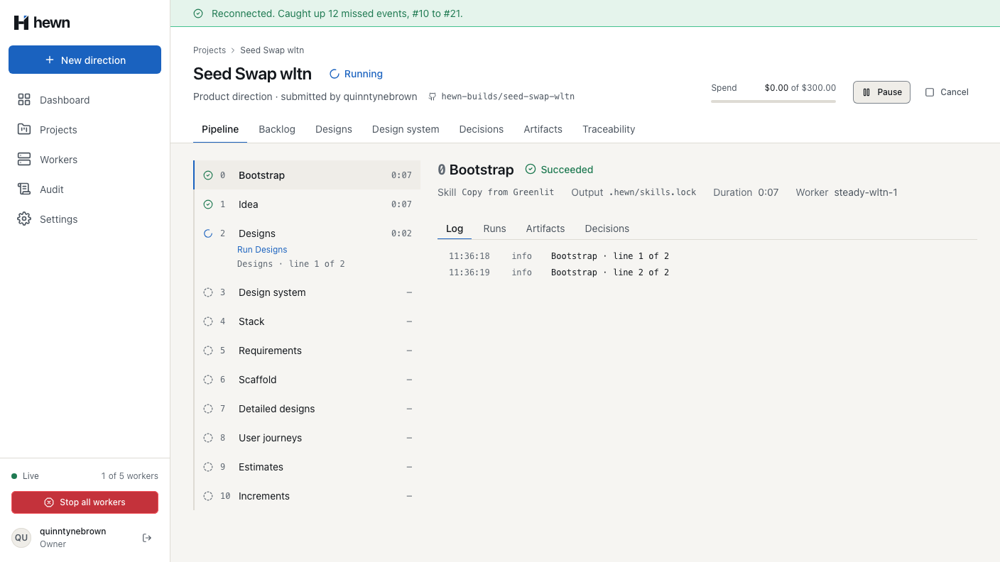
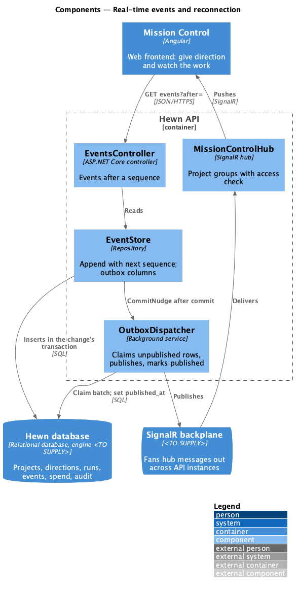
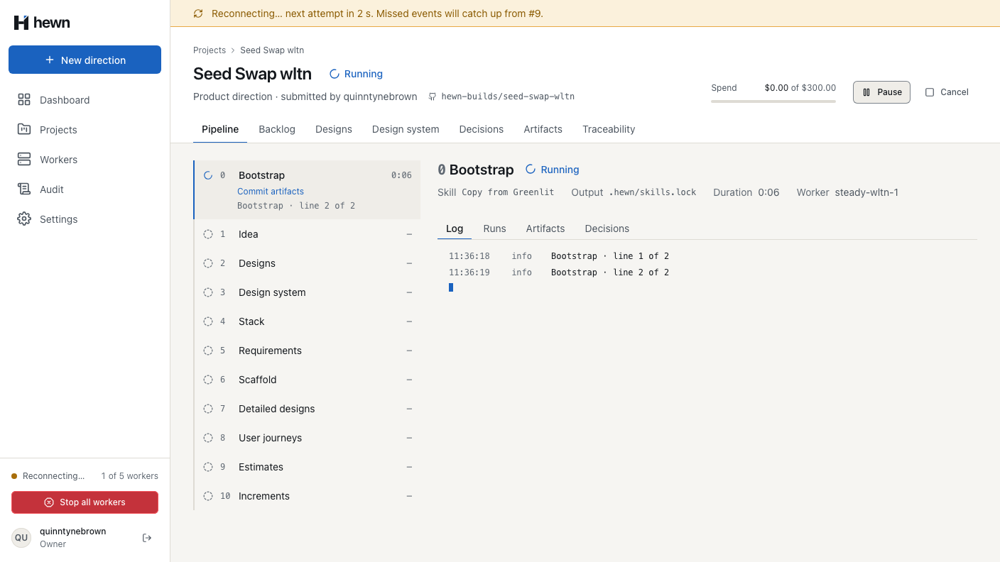
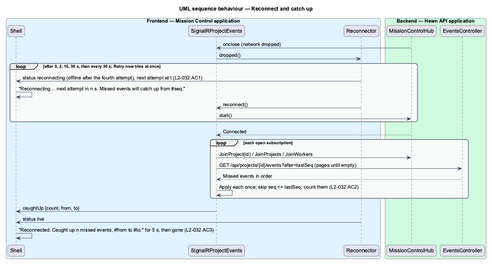
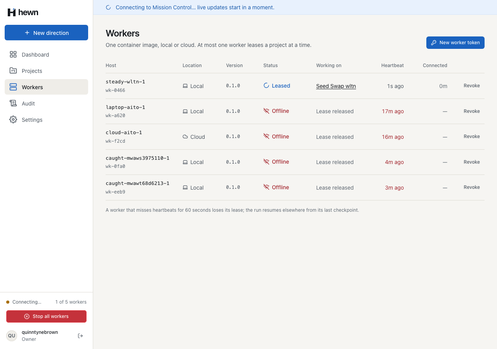
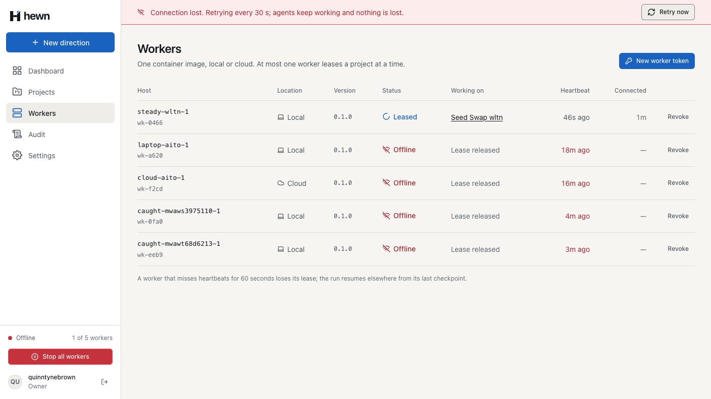
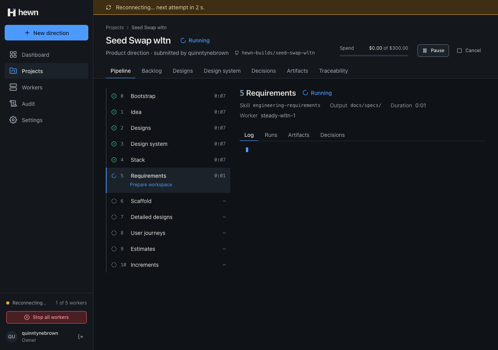
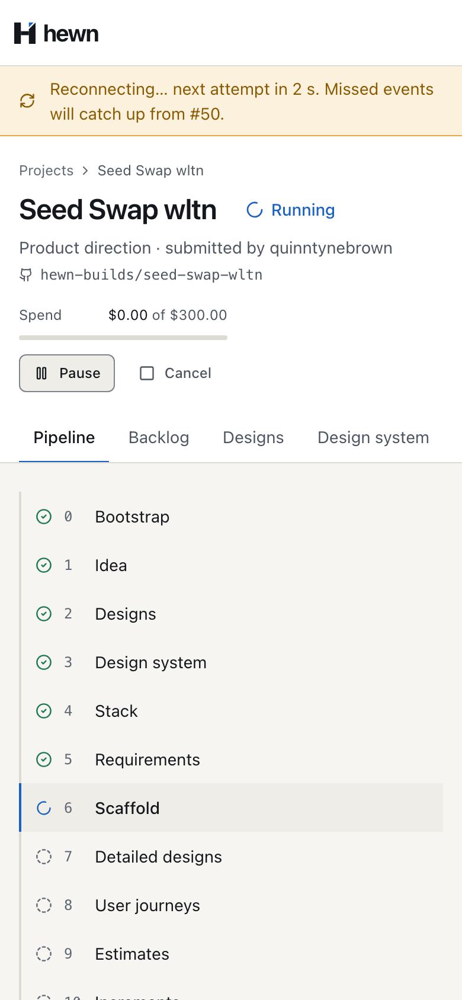

Say it dropped, retry on schedule, catch up every event once.



export const RECONNECT_DELAYS_MS = [0, 2_000, 10_000, 30_000] as const;
private schedule(): void {
const delay = RECONNECT_DELAYS_MS[this.failed] ?? EVERY_MS;
const nextAttemptAt = Date.now() + delay;
this.status$.next({
state: this.failed >= RECONNECT_DELAYS_MS.length ? 'offline' : 'reconnecting',
nextAttemptAt,
});
this.clear();
this.timer = setTimeout(() => void this.attempt(), delay);
}
private async reconnect(): Promise<void> {
if (this.connection.state === HubConnectionState.Disconnected) await this.connection.start();
const results = await Promise.all([...this.rejoins].map((rejoin) => rejoin()));
const summary: CatchUp = { count: 0, from: null, to: null };
for (const r of results) {
if (!r) continue;
summary.count += r.count;
if (r.from !== null) summary.from = Math.min(summary.from ?? r.from, r.from);
if (r.to !== null) summary.to = Math.max(summary.to ?? r.to, r.to);
}
this.caught.next(summary);
}


it('retries after 0, 2, 10 and 30 seconds, then every 30 seconds (L2-032 AC1)', async () => {
const { reconnector, attempts } = setup();
reconnector.dropped();
await vi.advanceTimersByTimeAsync(0 + 2_000 + 10_000 + 30_000 + 30_000 + 30_000);
expect(attempts).toEqual([0, 2_000, 12_000, 42_000, 72_000, 102_000]);
});
/** The network drops: the open connection closes and every attempt is refused until `restore`. */
async drop(): Promise<void> {
this.down = true;
await Promise.all([...this.sockets].map((ws) => ws.close({ code: 4000, reason: 'Network down' })));
this.sockets.clear();
}
await live.drop();
// The first attempt is at once; it fails, and the next is 2 s later.
await expect(live.banner).toHaveText(/^Reconnecting… next attempt in [12] s\./);
await expect(live.state).toHaveText('Reconnecting…');
const tried = live.attempts.length;
await page.clock.runFor(2_000);
await expect(live.banner).toHaveText(/^Reconnecting… next attempt in (9|10) s\./);
await page.clock.runFor(10_000);
await expect(live.banner).toHaveText(/^Reconnecting… next attempt in (29|30) s\./);
expect(live.attempts.length, 'one attempt after 2 s and one after 10 s more').toBe(tried + 2);
await page.clock.runFor(30_000);
// A fresh load shows exactly the same pipeline and log: nothing missed, nothing twice.
const fresh = await browser.newPage();
await signIn(fresh, 'quinntynebrown');
const reloaded = new ProjectPage(fresh);
await fresh.goto(`/projects/${projectId}`);
await expect(reloaded.pipeline).toBeVisible();
await reloaded.selectStage('Bootstrap');
await expect(reloaded.logLines.first()).toBeVisible();
// Running stages show a ticking duration; the rest must be identical.
const stages = async (p: ProjectPage) => (await p.pipeline.innerText()).replace(/\d+:\d\d(:\d\d)?/g, 'm:ss');
expect(await stages(project)).toBe(await stages(reloaded));
expect(await project.logLines.allInnerTexts()).toEqual(await reloaded.logLines.allInnerTexts());


